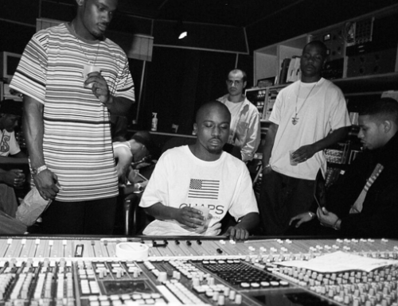
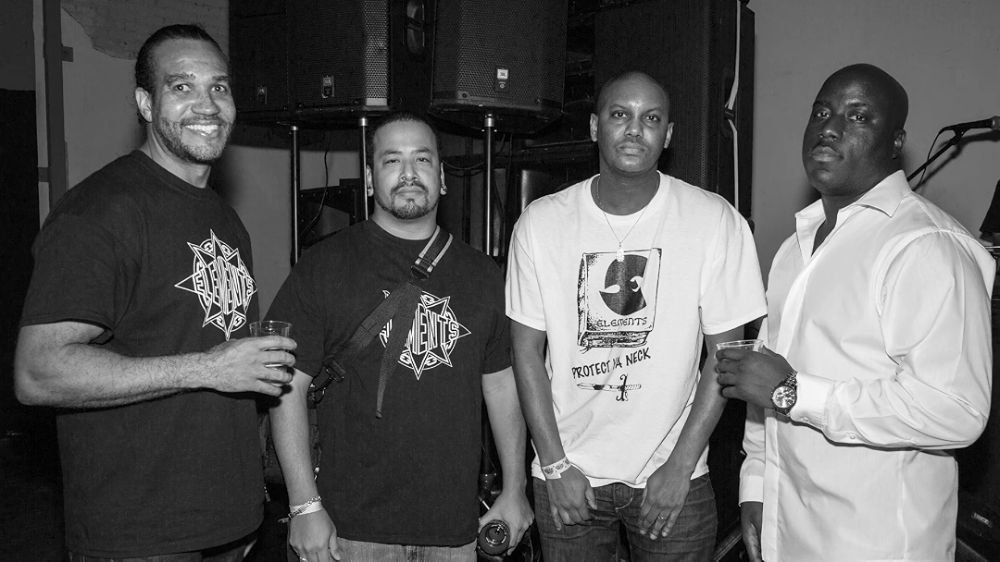
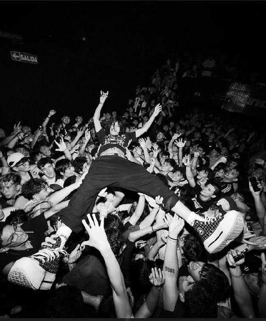

Recording / Mixing / Mastering / Vocal Chains
DOBLECERO
Un estudio para capturar voces con caracter, terminar canciones con criterio y llevar tu sonido urbano a un nivel mas competitivo.
Grabacion
Mixing
Mastering
Vocal Chains
Direccion vocal
Produccion urbana
Grabacion
Mixing
Mastering
Vocal Chains
Estudio musical urbano
Sonido oscuro, limpio y con presencia. Sin disfraz de plantilla.
DOBLECERO combina estetica under con un flujo de trabajo profesional: buena captura, decisiones tecnicas claras, referencias actuales y entregas listas para plataformas.
Servicios
Todo lo que una cancion necesita para salir fuerte.
Grabacion
Sesiones ordenadas para encontrar la toma correcta, cuidar la energia y salir con voces editables.
Mixing
Balance, profundidad, efectos y color para que cada parte del track tenga intencion.

03Mastering
Volumen, consistencia y traduccion para que el tema responda bien en distintos sistemas.
Vocal Chains
Cadenas vocales listas para grabar con autotune, compresion, delays y ambiente.
Proceso
De la idea al archivo final.
Preparamos la sesion
Referencias, tono, BPM, autotune, orden de pistas y objetivo del track.
Grabamos con direccion
Tomas, dobles, adlibs y decisiones de performance mientras la energia esta viva.
Cerramos el sonido
Edicion, mezcla, master y entrega con criterio para publicar o seguir produciendo.
Artista / Cliente
Un perfil para contratar servicios y organizar tus proximas sesiones.
Ideal para artistas de trap, rap, reggaeton y proyectos urbanos que necesitan grabar, mezclar o masterizar.
Crear perfil artistaProductor / Proveedor
Una base lista para perfiles profesionales del lado del estudio.
El registro contempla roles desde el comienzo para que el proyecto pueda crecer hacia servicios, proveedores y gestion interna.
Crear perfil productorGaleria
Texturas reales de estudio, noche y musica.

DOBLECERO